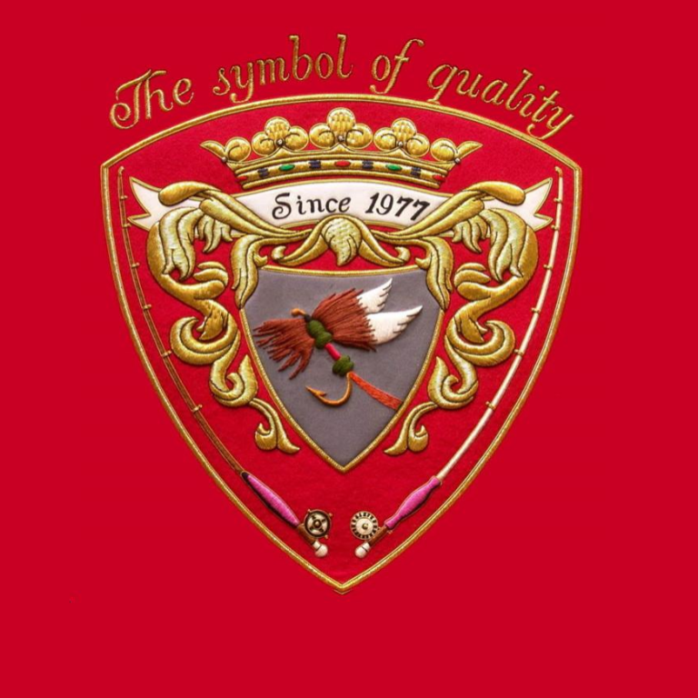

History of Royal Coachman company
John Haily, a professional fly-dresser living in New York City, was first who tied the Royal Coachman wet fly in 1878.
Theodore Gordon, creator of the Quill Gordon began investigating dry flies in the early 1890s and he designed floating versions of several common wet flies, and one of these was the Royal Coachman. The upright pinion slip wings were replaced with outward curving white male wood duck breast feathers and the fly became the Fan Wing Royal Coachman in his hands.
Royal Coachman is a special fly most known in whole flyfishing world as a Fan Wing Royal Coachman dry fly
Most known Royal Coachman flies is this regular Royal Coachman dry fly and even wet Royal Coachman fly
+ many others Royal Coachman flies in mine Royal Coachman family.
That was reason why in my age of 38 I registered 1977 my company after this famose fly. Many fiy fishermen use to discuss about Royal Coachman fly and therefore indirectly could even remember my company.
I opened in 1980 my shop for flyfishermen in middle of Stockholm City close to water, there a potential customer could test fly rod before desition to buy it or only test it as many people did.
Through the years, I introduced many well-known brands from the world of fly-fishing like Walton Powel, Graphite-USA, R.L.Winston, Fenwick, Fisher, Bruce & Walker, Pandion, Bogdan, Renzetti, just to name some of them.
I visited many of above named companies partly on their own place, like Dan Bailey in Livingston or on exhibitions.
Dan Bailey guided me on Billman creek to test fly fishing.
With the same opportunity, 1983 I received two different certified as a very first person in Sweden.
I met and discussed Jim Green at that time head designer for fly blanks for Fenwick. We discussed to build different blanks to cover whole world. Our blanks was strong, light and powerful. Some of them are still in use.
To see more just copy address and put it to the address box on your computer screen.
file:///F:/RoyalCoachmanSITE/blanks2.htm
One could get tire even the very large salmon. These two in 3 hours…
In 1986 when it was in Paris Exhibition for fishing equipment I loosed with a bardisk my Fenwick agency in Sweden and a new company was in Germany …. In 1990
In this bloody business there is only one rule; You can keep your agency if you order frequently and in large quantities.In 1990 I had burglary while I was fishing. I am convinced of that it was arranged with help of my envy customers.My situation was worse and worse partly because came on market new companies which slandered me very hard different ways and because I loosed lot of materials and flies with burglary.